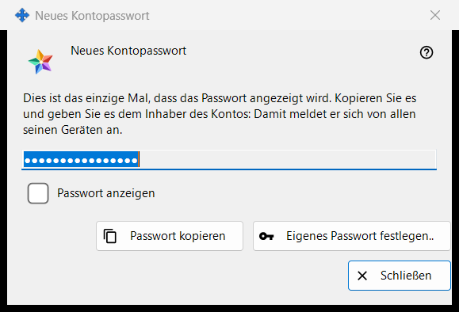
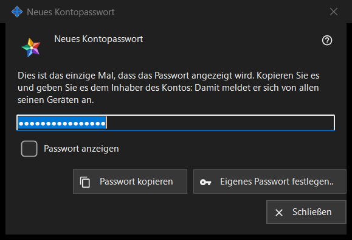

Neues Kontopasswort
Verwendungszweck
Zeigt das Passwort eines Kontos auf dem Austauschserver an oder fragt danach, in drei Modi: Erzeugt zeigt ein Passwort, das das Programm gerade erstellt hat, nur einmal (das Bild); Eingegeben fragt nach einem eigenen Passwort; Gespeichert zeigt ein auf diesem PC gespeichertes Passwort. Das Fenster öffnet sich in den Einstellungen des lokalen Austauschservers im Share Manager nach «Konto hinzufügen..», «Passwort zurücksetzen..» oder «Gemeinsames Passwort festlegen..» sowie aus den Fragen nach dem Administratorpasswort.


In dieser Reihenfolge
- Erzeugt: Klicken Sie auf «Passwort kopieren» (setzen Sie das Häkchen bei «Passwort anzeigen», um es zu lesen), geben Sie das Passwort an den Kontoinhaber weiter und klicken Sie auf «Schließen».
- Eigenes Passwort: Klicken Sie auf «Eigenes Passwort festlegen..» oder wählen Sie «Passwort selbst eingeben», geben Sie ein Passwort ein, das die Regel erfüllt, und klicken Sie auf «Passwort speichern».
- Gespeichert: Wählen Sie das Konto und klicken Sie auf «Passwort anzeigen..».
Die Elemente
Erzeugtes Passwort (im Bild)
Fenstertitel «Neues Kontopasswort». Der Einleitungstext lautet: «Dies ist das einzige Mal, dass das Passwort angezeigt wird. Kopieren Sie es und geben Sie es dem Inhaber des Kontos: Damit meldet er sich von allen seinen Geräten an.» Das Feld ist maskiert und schreibgeschützt; «Passwort anzeigen» macht es nur in diesem Fenster sichtbar. «Passwort kopieren» legt es über einen geschützten Weg in die Zwischenablage, der es aus dem Windows-Zwischenablageverlauf und aus der Cloud-Zwischenablage heraushält, und antwortet «Das Passwort wurde kopiert.». Beim Schließen des Fensters wird das Feld geleert.
Schließen ohne Kopieren
Wenn Sie ein erzeugtes Passwort schließen, das Sie weder kopiert noch angezeigt haben, fragt das Programm «Schließen, ohne das Passwort zu kopieren?» und fügt hinzu, dass es nicht erneut angezeigt werden kann - danach lässt es sich nur noch zurücksetzen. Die Standardantwort ist «Nein». Wird das Passwort auf diesem PC gespeichert, erscheint keine Frage.
Eigenes Passwort festlegen..
Wird im Kontofenster, im Fenster des gemeinsamen Einladungspassworts und im Fenster des Administratorpassworts verwendet: schließt dieses Fenster, ohne das erzeugte Passwort zu verwenden, und fragt erneut, jetzt nach einem Passwort, das Sie selbst eingeben - es ersetzt das erzeugte.
Eingegebenes Passwort
Fenstertitel «Kontopasswort», Beschriftung «Passwort:», ein maskiertes Feld und «Passwort anzeigen». Hinweis: «Mindestens 10 Zeichen, mit einem lateinischen Groß- und Kleinbuchstaben und einer Ziffer.» Während Sie tippen, nennt eine Warnzeile, was fehlt, zum Beispiel «Es wird mindestens eine Ziffer benötigt.». «Passwort speichern» lehnt ein Passwort ab, das die Regel nicht erfüllt; ein Passwort, das sie erfüllt, geht zurück an das Fenster, das danach gefragt hat, und der Server hat weiterhin das letzte Wort.
Gespeichertes Passwort
Der Fenstertitel ergänzt «Kontopasswort» um den Login. Das Fenster zeigt das auf diesem PC gespeicherte Passwort schreibgeschützt, mit «Passwort anzeigen» und «Passwort kopieren»; beim Schließen wird nichts gefragt. Es öffnet sich mit «Passwort anzeigen..» in der Kontenliste, die nur erscheint, solange der Schalter «Kontopasswörter auf diesem PC speichern» eingeschaltet ist. Der Schalter ist standardmäßig ausgeschaltet; beim Einschalten fragt das Programm zuerst nach, und das Passwort wird danach verschlüsselt für Ihr Windows-Konto gespeichert und kann von jedem Programm gelesen werden, das unter diesem Konto läuft. Ein Passwort, das vor dem Einschalten des Schalters gesetzt wurde, wird nicht gespeichert.
Managereinstellungen · SFTP-Freigabeeinstellungen · Einstellungen des Austauschservers